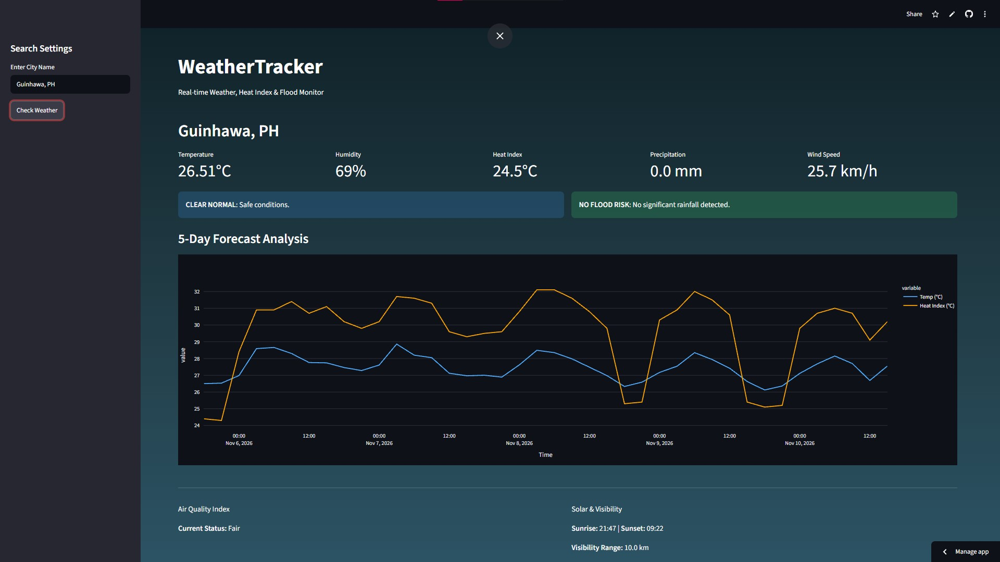

BulSU Weather Tracker App
Lead Front-End DeveloperA real-time campus weather tracking application tailored for BulSU students and faculty. Provides live temperature updates, localized rain alerts, class suspension announcements, and heat index warnings.
- Python
- Github
- Streamlit
- OpenWeather API